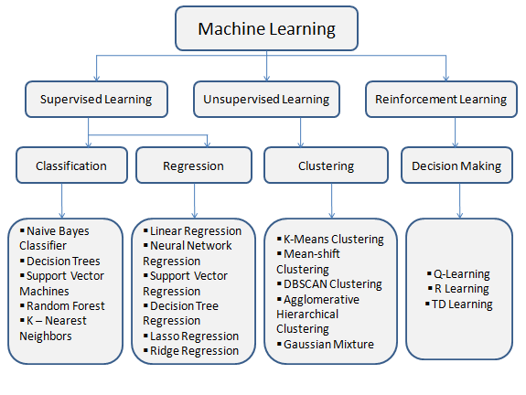
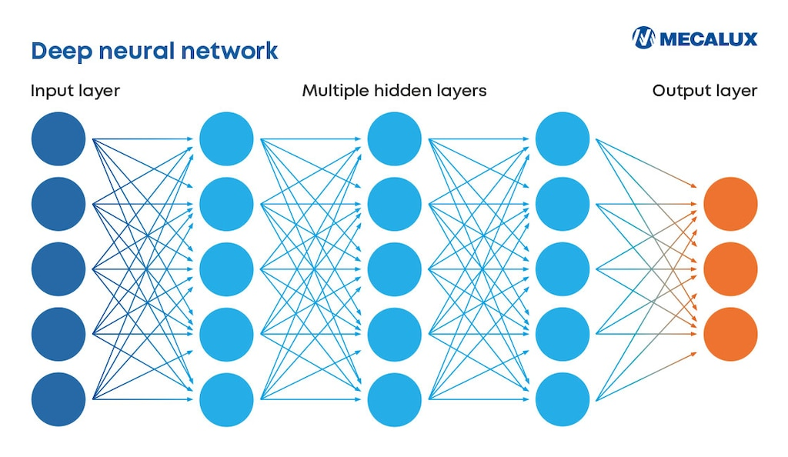
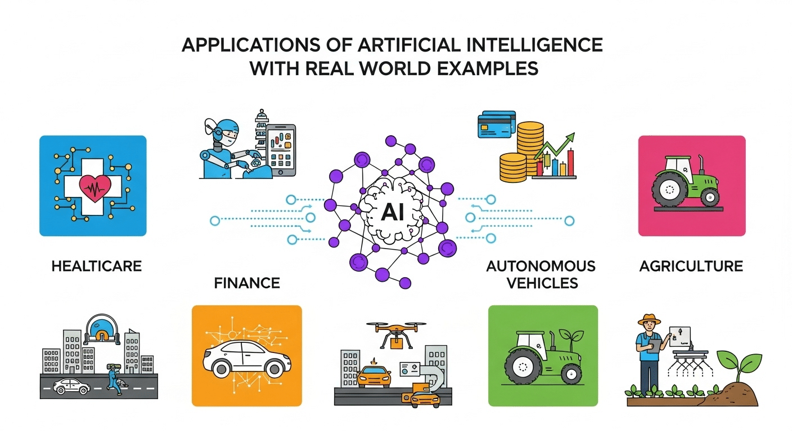

Artificial Intelligence Explanation for High School Students

Artificial Intelligence, or AI, is one of the most revolutionary technologies of our time. You can find AI on phones, social networks, search engines, video games, recommendations systems, cars and in other places.
But what exactly is AI? How does it work? How is it related to programming, mathematics, machine learning and deep learning?
We will discuss AI through concepts understandable by high school student in this blog post.
1. What is Artificial Intelligence?
Artificial Intelligence (AI) is a branch of computer science which deals with development of computer systems able to perform tasks requiring human intelligence.
Such tasks can include:
- Image recognition
- Natural language processing
- Prediction
- Problem solving
- Speech recognition
- Recommendations
- Text, images and music generation
- Decision making based on data
When YouTube suggests a video that you might like, AI algorithm analyzes your activity and predicts your future behavior.
AI is not always a computer that is "thinking like a human". Usually, AI systems are learning data and producing useful results.
2. Key Concepts of Artificial Intelligence

Before learning AI itself, we need to understand some basics.
Data
Data is the information which is used by AI for learning.
For example, AI algorithm able to distinguish cats can be trained using thousands or millions of photos of cats and non-cats.
Algorithm
Algorithm is a sequence of actions which solves certain problem.
AI algorithms are used to process data, extract patterns and produce results.
Model
AI model is a representation of data patterns created mathematically or computationally.
After being trained on photos of cats and dogs, classification model receives an image and predicts if it contains a cat or a dog.
Training and Inference
Training is a process of learning a model using data.
Inference happens when the model is ready and produces predictions.
Simple representation: Data -> Training -> Model -> Prediction
3. Programming Basics: Python
.jpeg)
Programming is one of the key skills needed to work with AI systems.
One of the most popular programming languages in the field of AI is Python due to simple syntax and numerous libraries dealing with mathematics, data and machine learning.
Here is a simple program written in Python which stores data in a variable and prints it:
name = "AI"
print("Hello, " + name)Also, Python allows to work with mathematical calculations:
x = 10
y = 5
result = x + y
print(result)As we progress towards AI systems, Python can be used along with appropriate libraries to work with data, create mathematical models, machine learning models and neural networks.
4. Mathematics Behind Artificial Intelligence

Mathematics is one of the foundations of AI.
You do not need to know very complicated mathematics to understand basic concepts. There are several branches of mathematics that are taught in high schools and that have direct connection with AI.
Linear Algebra
Linear algebra is a branch of mathematics which deals with vectors, matrices and operations on them.
Vector is an array of numbers:
Computer can use vectors to store and manipulate information, such as numerical features or parts of an image.
Matrices are especially important because very large amounts of data can be represented as tables of numbers.
For example:
Operations on matrices and vectors are widely used in modern machine learning algorithms.
Probability and Statistics
AI systems deal with uncertainty very often. That is why probability is especially important for them.
Let us suppose that an AI algorithm analyzes an image and produces the following result:
- Cat: 90%
- Dog: 8%
- Other: 2%
The AI algorithm is trying to express its confidence in different possibilities.
Statistics is also used in AI by researchers to understand data, find patterns, measure performance of machine learning models and evaluate models in other ways.
Key concepts of statistics include:
- Mean
- Median
- Standard deviation
- Probability
- Distributions
- Correlation
- Sampling
Basic Calculus
Calculus is also very important because AI models often minimize errors during their training.
One of the key concepts in calculus is derivative. Derivative tells us how fast the function changes.
For example, if:
Then:
In machine learning, derivatives are used to understand how changing the parameters of the model influences its error.
This idea leads us to the technique called gradient descent. It is one of the fundamental techniques used to train machine learning models.
So, mathematics is not only a school discipline. It provides many of the instruments used to build AI.
5. Machine Learning

Machine Learning (ML) is a branch of Artificial Intelligence.
Instead of hard-coding all the rules, machine learning systems are able to learn patterns from data.
Try to code the rules to recognize each possible cat image:
«"If the animal has two ears, four legs, whiskers, a certain eye shape and..."»
It is going to be very complicated. That is why instead of hard-coding we can use machine learning algorithm:
Examples -> Learning Algorithm -> Trained Model -> Prediction
There are several main categories of machine learning.
Supervised Learning
The model learns from labeled examples.
Example:
Image -> Label
Cat image -> "Cat"
Dog image -> "Dog"
Unsupervised Learning
The model tries to find patterns or clusters in data without having correct labels.
Reinforcement Learning
An AI system learns by interacting with the environment and receiving rewards and punishments.
This approach can be used in gaming and robotics.
6. Deep Learning

Deep Learning is a specialized branch of machine learning. It uses artificial neural networks with many layers.
Neural network can be represented in a simplified form as:
Input -> Hidden Layers -> Output
For example, in the case of an image recognition system, the system receives an image as an input and gradually analyzes numerical representation of its features before producing an output.
Deep learning became especially powerful because modern systems can train on huge datasets using powerful hardware.
Deep learning powers a lot of technologies related to:
- Computer vision
- Speech recognition
- Natural language processing
- Generative AI
- Autonomous systems
Generative AI uses neural network architecture with millions of learned parameters.
7. State-of-the-Art AI and Frameworks
AI continues to develop at a very rapid pace.
Modern AI systems include large language models, multimodal models, generative AI, computer vision systems, robotics models, AI agents and others.
Some modern AI systems are able to work with several types of data simultaneously, such as:
Text + Images + Audio + Video
AI developers use special software frameworks and libraries to build these systems.
Examples of these frameworks and libraries include:
- PyTorch
- TensorFlow
- Keras
- scikit-learn
They provide developers with building blocks to build, train, test and deploy machine learning models.
State-of-the-art AI is not only about creating the biggest model. The researchers also pay attention to:
- Accuracy
- Efficiency
- Reliability
- Safety
- Reasoning ability
- Cost
- Energy consumption
- Ability to work with different types of data
So, AI research is a mix of computer science, mathematics, engineering and science experiments.
8. Real-World Applications of Artificial Intelligence

Artificial Intelligence is used in many fields of our society now.
🏥 Healthcare
AI systems can help in analyzing medical images, working with researchers and clinical decision-making.
🚗 Transportation
AI systems can be used for navigation, traffic prediction, assistance to drivers and autonomous cars.
🎮 Gaming
AI is responsible for behavior of non-player characters, adaptive difficulty and detection of cheating in games.
AI can help developers to create game content.
📱 Smartphones
AI provides the functionality of voice assistants, camera processing, facial recognition, translations and text predictions.
🎬 Entertainment
AI systems of streaming services make movie and show recommendations based on user's behavior.
💰 Finance
AI can help in detecting abnormal transactions, analyzing financial data and automating different processes.
🌾 Agriculture
AI can help in analyzing crops, detecting diseases of plants and monitoring farms.
🎓 Education
AI can personalize the learning experience for students, generate practice questions and explain concepts to them.
9. Conclusion
Artificial Intelligence may seem very complicated, but its basics can be connected to the concepts that can be encountered by high school students.
Programming gives the instructions and the tools.
Mathematics gives the language and methods for representation and optimization of models.
Machine learning enables computers to learn from data.
Deep learning uses neural networks with many layers to solve more and more complicated problems.
And state-of-the-art AI combines these concepts with huge amounts of data, powerful computing resources and advanced algorithms.
It does not mean that you need to become an AI expert immediately. A high school student can start from basics:
Learn Mathematics -> Learn Python -> Learn About Data -> Learn Machine Learning -> Learn Deep Learning -> AI Projects
Artificial Intelligence is not only a technology of the future. It is already a part of our present, and students understanding basics of AI can become the shapers of its future.